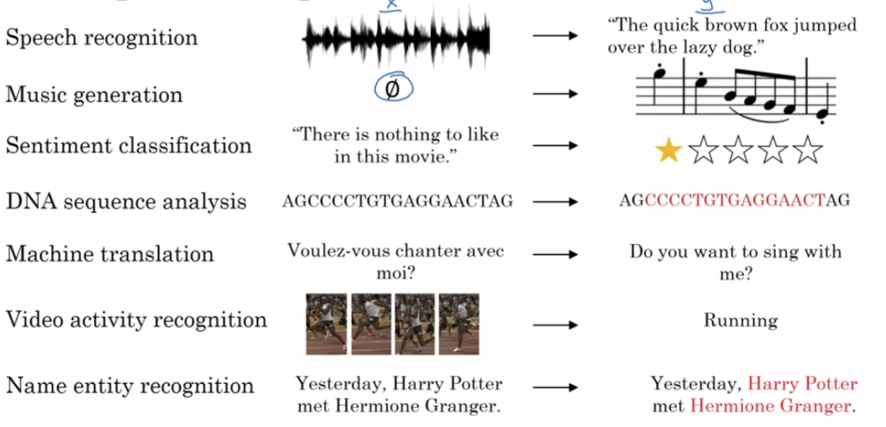

Code
# Constituency Parsing
# Dependency Parsing
# semantics
# NLI
# Grounding
# Co-reference resolutin
# Multilingual MT
# corenlp.runNLP stands for Natural Language Processing, which is a subfield of artificial intelligence (AI) that focuses on the interaction between computers and human language. NLP encompasses the development of algorithms, models, and techniques that enable computers to understand, interpret, and generate human language in a valuable way. Here are some key aspects of NLP: NLP is Classified in two sub-categories
NLU (Natural Language Understanding) - NLU is about teaching machines to understand what humans are saying. It includes task like Semantic Parsing, Relation Extraction, Natural Language Inference, Word Sense Disambiguation. NLG (Natural Language Generation) - NLG is about teaching machines to generate human-like text or speech. It includes tasks like language translation, text generation, and text summarization, where the machine generates text that sounds natural to humans.Variety of Task under NLP:
1. Part-of-speech tagging: identify if each word is a noun, verb, adjective, etc.)
2. Named entity recognition NER): identify person names, organizations, locations, medical codes, time expressions, quantities, monetary values, etc)
3. Question answering
4. Speech recognition
5. Text-to-speech and Speech-to-text
6. Topic modeling
7. Sentiment classification
9. Language modeling
10. Translation
11. Intent Recognition
12. Semantic Parsing
13. Co-reference Resolution and Dependency Parsing
14. Summarization
15. Chatbots etc.
16. Text Classification
17. Topic Modeling
18. Image Captioning
19. Optical Character Recognition
20. Visual Question Answering
For Generative Training :- Where the model has to learn about the data and its distribution
1. News Article:- Archives
2. Wikipedia Article
3. Book Corpus
4. Crawling the Internet for webpages.
5. Social Media - Reddit, Stackoverflow, twitter
6. Handcrafted Datasets.Generative training on an abundant set of unsupervised data helps in performing Transfer learning for a downstream task where few parameters need to be learnt from sratch and less data is also required.
For Determinstic Training :- Where the model learns about Decision boundary within the data.
Generic
1. Kaggle Dataset
Sentiment
1. Product Reviews :- Amazon, Flipkart
Emotion:-
1. ISEAR
2. Twitter dataset
Question Answering:-
1. SQUAD
Different task has different Handcrafted data.In vernacular context we have crisis in data especially when it comes to state specific language in India. (Ex. Bengali, Gujurati etc.) Few Sources are:- 1. News (Jagran.com, Danik bhaskar) 2. Moview reviews (Web Duniya) 3. Hindi Wikipedia 4. Book Corpus 6. IIT Bombay (English-Hindi Parallel Corpus)
Any NLP task has to have few important components. 1. Data Pre-processing (Basically Junk removal from text) 2. Tokenization 3. Feature Selection 4. Token Vectorization 4. Model Building 5. Training and Inference.
Data preprocessing is a crucial step in natural language processing (NLP) that involves cleaning and transforming raw text data into a format that can be effectively used for NLP tasks. Here is a list of common NLP data preprocessing techniques:
Tokenization: Splitting the text into individual words or tokens. Tokenization is the foundation for many NLP tasks.
Lowercasing: Converting all text to lowercase to ensure uniformity and simplify analysis by treating words in a case-insensitive manner.
Stop Word Removal: Removing common words (e.g., “and,” “the,” “in”) that don’t carry much meaning and are often filtered out to reduce noise.
Punctuation Removal: Stripping punctuation marks from text to focus on the actual words.
Special Character Removal: Removing special characters or symbols that may not be relevant to the analysis.
Whitespace Trimming: Removing extra spaces or leading/trailing spaces.
HTML Tag Removal: When dealing with web data, removing HTML tags that may be present in the text.
Stemming: Reducing words to their root or base form. For example, “running” and “ran” would both be stemmed to “run.”
Lemmatization: Similar to stemming but reduces words to their dictionary or lemma form, which often results in a more linguistically accurate word.
Spell Checking: Correcting spelling errors in the text to improve the quality of the data.
Text Normalization: Ensuring consistent representations for words, like converting abbreviations to their full form (e.g., “don’t” to “do not”).
Handling Contractions: Expanding contractions (e.g., “can’t” to “cannot”) for better analysis.
Handling Acronyms: Expanding acronyms (e.g., “NLP” to “natural language processing”) for clarity.
Noise Removal: Eliminating irrelevant or noisy data, such as non-textual content or metadata.
Token Filtering: Filtering tokens based on specific criteria (e.g., length, frequency) to remove outliers or less meaningful words.
Text Chunking: Dividing text into smaller chunks or sentences for analysis.
Handling Missing Data: Dealing with missing values or incomplete text data.
Removing Duplicates: Identifying and removing duplicate or near-duplicate text entries.
Tokenization is the process of breaking down a text or a sequence of characters into smaller units, typically words or subwords, which are called tokens.
The primary purpose of tokenization is to split text into units that can be processed more easily. These units are the basic building blocks for various NLP tasks. Here are some key points about tokenization:
Token: A token is a single unit or word that results from the tokenization process. For example, the sentence “I love NLP” can be tokenized into three tokens: “I,” “love,” and “NLP.”
Word Tokenization: Word tokenization involves splitting text into words. In many cases, words are separated by whitespace or punctuation. Word tokenization is a common approach for many NLP tasks.
Subword Tokenization: Subword tokenization splits text into smaller units, which are often subword parts or characters. This approach is used in models like BERT, which can capture the meaning of subwords and handle out-of-vocabulary words effectively.
Sentence Tokenization: Sentence tokenization divides text into individual sentences. It is used to process and analyze text at the sentence level.
From Tokens features are created 1. N-grams: Extracting multi-word phrases (n-grams) to capture more context (e.g., “natural language processing” as a bigram).
Entity Recognition: Identifying and labeling entities (e.g., names of people, organizations, locations) in the text.
Part-of-Speech Tagging: Assigning parts of speech (e.g., noun, verb, adjective) to words in the text.
Encoding/Decoding: Converting text into numerical representations, such as one-hot encoding or word embeddings, and vice versa.
Bag of Words 
TF-IDF 
Representation of Text for Sequence Task
Every text in a sentence is represented using one hector vector based on its position in the vocabulary
Word EmbeddingsBOW and TF-IDF are spare representation of Tokens. In contrast Embedding refer to dense vector representations of Tokens in a continuous vector space. These embeddings are used to represent words or other linguistic units in a way that captures semantic relationships and contextual information.
Embeddings are a fundamental component of many NLP applications, enabling models to understand and work with textual data in a way that captures semantic information and relationships between words. They have revolutionized the field of NLP and have significantly improved the performance of various NLP tasks.
1. Word2Vec
2. Glove
3. FastText
4. ELMOSeq-Seq
Seq-Seq Attention
Pointer Generator Network
Transformer
GPT
Transformer-XL
BERT
GPT-2
# Constituency Parsing
# Dependency Parsing
# semantics
# NLI
# Grounding
# Co-reference resolutin
# Multilingual MT
# corenlp.run